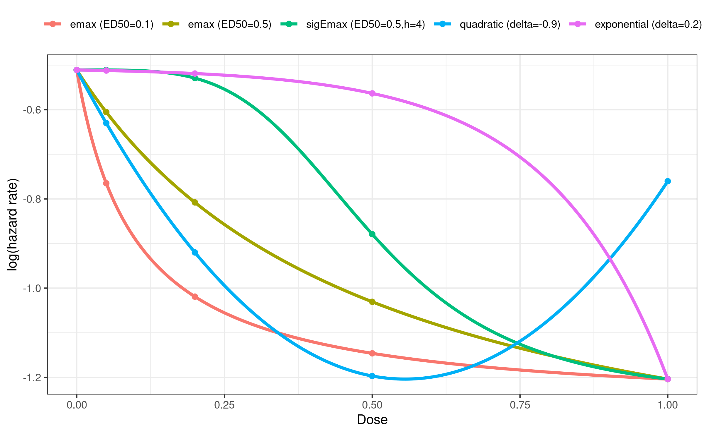
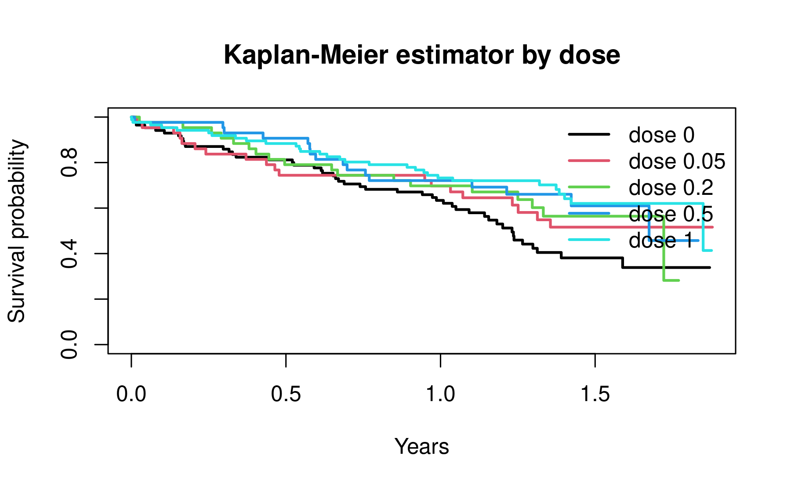
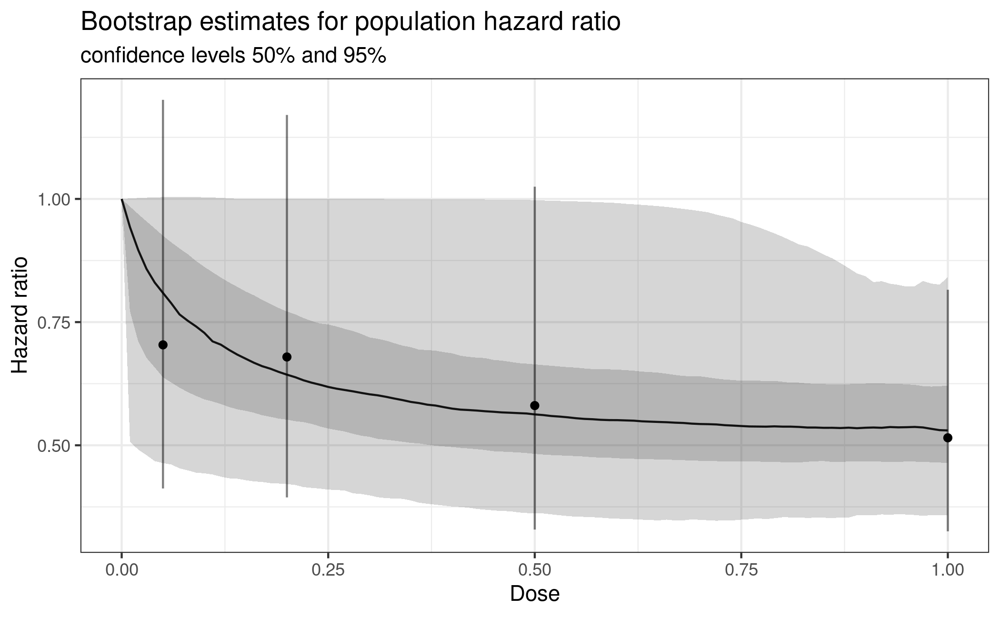

In this vignette we illustrate how to use the
DoseFinding package with time-to-event (survival)
endpoints. We show how to simulate a dose-finding trial, how to apply
the generalized MCP-Mod methodology to the log hazard ratios estimated
from a Cox proportional hazards model, and how to perform power and
sample size calculations following Deng et al.
(2019).
For continuously distributed data see the analysis of normal data vignette, and for binary data the binary data vignette.
library(DoseFinding)
library(ggplot2)
library(survival)
## set seed and ensure reproducibility across R versions
set.seed(2010, kind = "Mersenne-Twister", sample.kind = "Rejection", normal.kind = "Inversion")Example trial
We will first generate an appropriate dataset that we can use to illustrate the analysis of time-to-event data.
Assume a dose-finding study is planned for a hypothetical investigational treatment. The endpoint of interest is the time to a certain event. The treatment is tested with doses 0 (placebo), 0.05, 0.2, 0.5 and 1, with an allocation ratio of 2:1:1:1:2. The larger allocation to placebo and highest dose is chosen to increase the power. It is assumed that the hazard rate for the placebo group is \(\lambda_0 = 0.6\) and that the hazard ratio for the maximum effect over the dose range is \(\text{HR} = 0.5\). This results in a hazard rate of \(\lambda_1 = 0.3\).
We define the parameters for the example just described:
doses <- c(0, 0.05, 0.2, 0.5, 1) # placebo and 4 treatment groups
lambda0 <- 0.6 # yearly hazard rate for the placebo group
HR1 <- 0.5 # hazard ratio for the treatment effect at the highest dose
lambda1 <- lambda0 * HR1 # hazard rate for the highest dose
alRatio <- c(2, 1, 1, 1, 2) # allocation ratio across the dose groupsWe use the following candidate set of dose-response models for the mean response: an \(\text{E}_{\text{max}}\), a sigmoidal \(\text{E}_{\text{max}}\), a quadratic and an exponential model.
In the survival context a decreasing response (a lower
hazard) typically corresponds to a beneficial treatment effect, so we
specify direction = "decreasing".
The dose-response models are placed on the log hazard scale,
because dose-response models in the DoseFinding package
assume additive effects. Consequently:
-
placEffis the log hazard rate of the placebo arm, i.e. \(\log(\lambda_0)\). -
maxEffis the maximum treatment effect within the dose range, i.e. the difference between the response at the highest dose andplacEff. On the log hazard scale this equals the log hazard ratio, since \[ \log(\text{HR}) = \log(\lambda_1) - \log(\lambda_0). \]
mods <- Mods(
emax = c(0.1, 0.5),
sigEmax = c(0.5, 4),
quadratic = -0.9,
exponential = 0.2,
doses = doses,
direction = "decreasing", # decreasing (lower hazard) is beneficial
placEff = log(lambda0), # log hazard rate of the placebo arm
maxEff = log(lambda1) - log(lambda0) # log hazard ratio at the highest dose
)
plotMods(mods, superpose = TRUE, ylab = "log(hazard rate)")
To illustrate the methodology we simulate a survival data set based on the trial assumptions and one of our assumed candidate models. The function below draws survival times from an exponential distribution under one of the candidate models. It supports-
event-driven censoring: the study is run until a total of
etotalevents have been observed, and - optional staggered study entry: an entry (calendar) time is
added to each patient’s event time, the data are censored on the
calendar-time scale at the time of the
etotal-th event, and the observed follow-up time is then expressed on the study-time scale.
#' @param mods `Mods` object defining the candidate models to simulate from
#' @param model name or index of the model whose hazards are used to simulate
#' (refers to column names or column indices of getResp(mods))
#' @param alRatio allocation ratio across the dose groups
#' @param n total sample size
#' @param etotal number of events at which event-driven censoring is applied
#' @param staggered logical, whether to use staggered study entry
#' @return data.frame with columns group, time, status
simulate_surv_data <- function(mods, model, alRatio, n, etotal,
staggered = FALSE) {
doses <- attr(mods, "doses")
y <- getResp(mods)
lambda0 <- exp(attr(mods, "placEff"))
## assign each patient to a dose group (log hazard rate) according to alRatio
log_rate_resp <- rep(y[, model], rndDesign(alRatio/sum(alRatio), n))
## entry (calendar) times
entry <- if (staggered) {
runif(n, 0, qexp(etotal / n, lambda0))
} else {
rep(0, n)
}
## event times on the calendar-time scale
event <- entry + rexp(n, exp(log_rate_resp))
## event-driven censoring at the time of the etotal-th event
t_cut <- sort(event)[etotal]
status <- as.numeric(event <= t_cut)
obs_time <- pmin(event, t_cut) - entry # follow-up on the study-time scale
data.frame(
group = factor(names(log_rate_resp), levels = as.character(doses)),
time = obs_time,
status = status
)
}We simulate a trial of 300 patients using the hazards from the \(\text{E}_{\text{max}}\) model
(model = 1) and assuming we will require 130 events.
n <- 300
dat <- simulate_surv_data(
mods, model = 1, alRatio = alRatio, n = n, etotal = 130,
staggered = TRUE
)
head(dat) group time status
1 0 1.29867714 1
2 0 0.16112692 1
3 0 0.04348961 1
4 0 1.08575291 0
5 0 0.44484421 1
6 0 1.32996990 0We can use a Kaplan-Meier plot to visualize the survival times by dose.
km <- survfit(Surv(time, status) ~ group, data = dat)
plot(km, col = seq_along(doses), lwd = 2,
xlab = "Years", ylab = "Survival probability",
main = "Kaplan-Meier estimator by dose")
legend("topright", legend = paste("dose", doses),
col = seq_along(doses), lwd = 2, bty = "n")
Analysis with MCP-Mod
We will now walk through the typical steps of a MCP-Mod analysis using our simulated trial data.
MCP step
The generalized MCP-Mod approach requires an estimate \(\hat\mu\) of the (in this case placebo-adjusted) dose-group effects together with its covariance matrix \(\hat S\). We obtain both from a Cox proportional hazards model, which expresses the hazard as \[ \lambda(t \mid \text{dose}) = \lambda_0(t)\exp(\beta_1 x_1 + \dots + \beta_p x_p), \] where the coefficients \(\beta\) are the log hazard ratios of each dose group relative to placebo.
Call:
coxph(formula = Surv(time, status) ~ group, data = dat)
n= 300, number of events= 130
coef exp(coef) se(coef) z Pr(>|z|)
group0.05 -0.3513 0.7038 0.2727 -1.288 0.19775
group0.2 -0.3868 0.6792 0.2776 -1.393 0.16355
group0.5 -0.5437 0.5806 0.2899 -1.875 0.06074 .
group1 -0.6632 0.5152 0.2344 -2.829 0.00466 **
---
Signif. codes: 0 '***' 0.001 '**' 0.01 '*' 0.05 '.' 0.1 ' ' 1
exp(coef) exp(-coef) lower .95 upper .95
group0.05 0.7038 1.421 0.4124 1.2011
group0.2 0.6792 1.472 0.3942 1.1704
group0.5 0.5806 1.722 0.3289 1.0248
group1 0.5152 1.941 0.3254 0.8156
Concordance= 0.569 (se = 0.025 )
Likelihood ratio test= 9.02 on 4 df, p=0.06
Wald test = 9.18 on 4 df, p=0.06
Score (logrank) test = 9.42 on 4 df, p=0.05
coef_cox <- coef(coxfit) # placebo-adjusted log hazard ratios
S_cox <- vcov(coxfit) # covariance matrix of the estimatesWe now test for a dose-response signal with MCTtest().
Since the coxfit model returns placebo-adjusted estimates (there is no
placebo coefficient), we use placAdj = TRUE and drop the
placebo dose from dose, we test one-sided.
mct <- MCTtest(
dose = doses[-1], # placebo-adjusted, so drop placebo
resp = coef_cox,
S = S_cox,
models = mods,
type = "general",
alternative = "one.sided",
placAdj = TRUE
)
mctMultiple Contrast Test
Contrasts:
emax1 emax2 sigEmax quadratic exponential
0.05 0.150 0.263 0.254 0.217 0.195
0.2 -0.246 -0.024 0.218 -0.406 0.175
0.5 -0.390 -0.286 -0.164 -0.880 0.112
1 -0.875 -0.921 -0.928 -0.116 -0.959
Contrast Correlation:
emax1 emax2 sigEmax quadratic exponential
emax1 1.000 0.958 0.810 0.786 0.680
emax2 0.958 1.000 0.940 0.659 0.832
sigEmax 0.810 0.940 1.000 0.414 0.936
quadratic 0.786 0.659 0.414 1.000 0.131
exponential 0.680 0.832 0.936 0.131 1.000
Multiple Contrast Test:
t-Stat adj-p
emax1 2.962 0.00431
emax2 2.856 0.00643
sigEmax 2.510 0.01646
exponential 2.192 0.03639
quadratic 2.112 0.04414The output reports, per candidate model, the optimal-contrast \(t\)-statistics together with multiplicity-adjusted \(p\)-values. Small adjusted \(p\)-values give evidence for a dose-response relationship. If we would have specified a significance level of 0.025 one-sided, then we can consider the null hypothesis of no dose-response effect versus placebo is rejected since several of the adjusted p-values are smaller than 0.025.
Dose-response estimation
Dose-response modeling can then proceed with a combination of
bootstrapping and model averaging. For detailed explanations refer to
the vignette for analysis of continuous
data. Fitting is done on the log-hazard ratio scale so we are using
placebo-adjusted models. Since maFitMod does not support
placebo-adjusted dose-response estimation we need to define a couple of
helper functions to perform the model averaging.
one_bootstrap_prediction <- function(mu_hat, S_hat, doses, bounds, dose_seq) {
sim <- drop(mvtnorm::rmvnorm(1, mu_hat, S_hat))
fit <- lapply(c("emax", "sigEmax", "exponential", "quadratic"), function(mod)
fitMod(doses, sim, model = mod, S = S_hat, type = "general", bnds = bounds[[mod]], placAdj = TRUE))
index <- which.min(sapply(fit, gAIC))
pred <- predict(fit[[index]], doseSeq = dose_seq, predType = "effect-curve")
return(pred)
}
## bs_predictions is a doses x replications matrix,
## probs is a 4-element vector of increasing probabilities for the quantiles
summarize_predictions <- function(bs_predictions, probs) {
stopifnot(length(probs) == 4)
med <- apply(bs_predictions, 1, median)
quants <- apply(bs_predictions, 1, quantile, probs = probs)
bs_df <- as.data.frame(cbind(med, t(quants)))
names(bs_df) <- c("median", "low_out", "low_in", "high_in", "high_out")
return(bs_df)
}
predict_and_plot <- function(mu_hat, S_hat, doses, dose_seq, n_rep) {
bs_rep <- replicate(
n_rep, one_bootstrap_prediction(mu_hat, S_hat, doses, defBnds(max(doses)), dose_seq))
bs_summary <- summarize_predictions(bs_rep, probs = c(0.025, 0.25, 0.75, 0.975))
bs_summary <- as.data.frame(exp(bs_summary)) # back to hazard ratio scale
ci_half_width <- qnorm(0.975) * sqrt(diag(S_hat))
cox_summary <- data.frame(dose = doses, mu_hat = exp(mu_hat),
low = exp(mu_hat - ci_half_width),
high = exp(mu_hat + ci_half_width))
gg <- ggplot(cbind(bs_summary, dose_seq = dose_seq)) + geom_line(aes(dose_seq, median)) +
geom_ribbon(aes(x = dose_seq, ymin = low_in, ymax = high_in), alpha = 0.2) +
geom_ribbon(aes(x = dose_seq, ymin = low_out, ymax = high_out), alpha = 0.2) +
geom_point(aes(dose, mu_hat), cox_summary) +
scale_y_continuous(breaks = seq(0.5, 1.5, 0.25)) +
geom_errorbar(aes(dose, ymin = low, ymax = high), cox_summary, width = 0, alpha = 0.5) +
xlab("Dose") + ylab("Hazard ratio") +
labs(title = "Bootstrap estimates for population hazard ratio",
subtitle = "confidence levels 50% and 95%")
return(gg)
}We then use these functions to plot the estimated dose-response curve together with the Cox model estimates on the original hazard ratio scale.
predict_and_plot(coef_cox, S_cox, doses[-1], dose_seq = seq(0, 1, 0.01), 1000)
Power and sample size calculations at design stage
For power and sample size calculations in generalized MCP-Mod we need to make an assumption about the covariance matrix \(S\) of the placebo-adjusted estimates under the alternative. Deng et al. (2019) derive an approximation for the covariance matrix of the estimated log hazard ratios for a Cox model which we will use in the following.
Let \(n_k\) be the number of patients in dose group \(k\) (\(k = 0\) for placebo), \(D\) the total number of events, and \(\beta_k\) the log hazard ratio of dose group \(k\) vs. placebo (with \(\beta_0 = 0\)). Then, with \[ p_k = \frac{(n_k/n_0)\exp(\beta_k)}{1 + \sum_{i=1}^{K}(n_i/n_0)\exp(\beta_i)}, \] the covariance matrix \(S\) of \(\hat\beta = (\hat\beta_1, \dots, \hat\beta_K)\) is approximately \[ S \approx \frac{1}{D} \begin{pmatrix} p_1^{-1} + p_0^{-1} & p_0^{-1} & \cdots & p_0^{-1}\\ p_0^{-1} & p_2^{-1} + p_0^{-1} & \cdots & p_0^{-1}\\ \vdots & \vdots & \ddots & \vdots\\ p_0^{-1} & p_0^{-1} & \cdots & p_K^{-1} + p_0^{-1} \end{pmatrix}. \]
Since this matrix depends on the total number of events rather than the total number of patients, this facilitates the use of event-driven dose-finding designs. Under the null hypothesis of no dose-response effect versus placebo (\(\beta_k = 0\) for all \(k\)) the covariance matrix simplifies to a matrix \(S_0\) that depends only on the allocation ratios to each arm and the total number of events, and is used to obtain the critical value for the multiple contrast test.
The following function calculates both \(S\) (one per candidate model) and \(S_0\). Following Deng et al. (2019)
we evaluate \(S\) at half the assumed
effect, 0.5 * beta, an intermediate value between the null
and the alternative. Then using \(S\)
and \(S_0\) we compute the power under
each candidate model. The function below builds the optimal contrast for
each model (using its own \(S\)),
derives the critical value from \(S_0\), and evaluates the power for a given
number of events with powMCT(). We also define a function
that allows us to calculate the required number of events to achieve a
target average power using binary search.
#' Power of the multiple contrast test for a time-to-event endpoint
#'
#' @param mods Set of dose-response models; an object of class `Mods`.
#' @param alpha One-sided significance level.
#' @param alRatio Positive allocation weights for all treatment groups,
#' including placebo.
#' @param etotal Positive number of events.
#'
#' @return A list containing:
#' - `power_table`: power under each candidate model and the average power;
#' - `power`: unrounded power under each candidate model;
#' - `power_av`: unrounded average power;
#' - `contMat`: matrix of optimal contrasts;
#' - `critV`: critical value for the multiple contrast test.
powMCT_TTE <- function(mods, alpha, alRatio, etotal) {
y <- getResp(mods)
doses <- attr(mods, "doses")
n_group <- nrow(y)
n_model <- ncol(y)
n_active <- n_group - 1
model_names <- colnames(y)
if (is.null(model_names)) {
model_names <- paste0("model", seq_len(n_model))
}
# Placebo-adjusted log hazard ratios.
beta <- sweep(y, 2, y[1, ], FUN = "-")
# Group probabilities evaluated at half the assumed treatment effect.
weighted_hazards <- exp(0.5 * beta) * alRatio
p <- sweep(
weighted_hazards,
2,
colSums(weighted_hazards),
FUN = "/"
)
# Covariance matrices under each candidate alternative.
S <- array(
0,
dim = c(n_active, n_active, n_model),
dimnames = list(
as.character(doses[-1]),
as.character(doses[-1]),
model_names
)
)
for (i in seq_len(n_model)) {
p0 <- p[1, i]
S_i <- matrix(
1 / p0,
nrow = n_active,
ncol = n_active
)
diag(S_i) <- 1 / p[-1, i] + 1 / p0
S[, , i] <- S_i / etotal
}
# Covariance matrix under the null hypothesis.
p_null <- alRatio / sum(alRatio)
p0_null <- p_null[1]
S0 <- matrix(
1 / p0_null,
nrow = n_active,
ncol = n_active
)
diag(S0) <- 1 / p_null[-1] + 1 / p0_null
S0 <- S0 / etotal
# Obtain the optimal contrast for each candidate model using the
# covariance matrix associated with that model.
contMat <- vapply(
seq_len(n_model),
FUN = function(i) {
contrast_i <- optContr(
mods,
doses = doses[-1],
S = S[, , i],
placAdj = TRUE
)[[1]]
contrast_i[, i]
},
FUN.VALUE = numeric(n_active)
)
dimnames(contMat) <- list(
as.character(doses[-1]),
model_names
)
# The null correlation matrix and critical value do not depend on which
# candidate model is treated as the true model.
covMat0 <- crossprod(contMat, S0 %*% contMat)
corMat0 <- cov2cor(covMat0)
integration_control <- mvtnorm.control()
critV <- critVal(
corMat0,
alpha,
df = 0,
alternative = "one.sided",
control = integration_control
)
model_power <- numeric(n_model)
for (i in seq_len(n_model)) {
model_power[i] <- powMCT(
contMat,
alpha = alpha,
altModels = mods,
S = S[, , i],
placAdj = TRUE,
alternative = "one.sided",
df = Inf,
critV = critV,
control = integration_control
)[i]
}
average_power <- mean(model_power)
power_table <- data.frame(
model = c(model_names, "average"),
power = round(c(model_power, average_power), 3),
row.names = NULL
)
list(
power_table = power_table,
power = stats::setNames(model_power, model_names),
power_av = average_power,
contMat = contMat,
critV = critV
)
}
#' Required number of events for a target power
#'
#' @param mods Set of dose-response models; an object of class `Mods`.
#' @param alpha One-sided significance level.
#' @param alRatio Positive allocation weights for all treatment groups,
#' including placebo.
#' @param targPow Target average power.
#' @param lowerE Lower bound for the number of events.
#' @param upperE Upper bound for the number of events.
#'
#' @return A list containing:
#' - `events`: smallest integer event count attaining the target power;
#' - `power`: average power at that event count;
#' - `power_table`: model-specific powers at that event count;
#' - `target_power`: requested average power.
eventsMCT_TTE <- function(mods,
alpha,
alRatio,
targPow,
lowerE = 1,
upperE = 1000) {
# alRatio = 1 makes sampSize() iterate the total number of events directly;
# targFunc still uses the alRatio argument of eventsMCT_TTE (lexical scoping)
events <- sampSize(
upperN = upperE,
lowerN = lowerE,
targFunc = function(e) {
powMCT_TTE(mods = mods, alpha = alpha, alRatio = alRatio, etotal = e)$power_av
},
target = targPow,
alRatio = 1,
Ntype = "total"
)$samp.size
final_result <- powMCT_TTE(
mods = mods,
alpha = alpha,
alRatio = alRatio,
etotal = events
)
list(
events = events,
power = final_result$power_av,
power_table = final_result$power_table,
target_power = targPow
)
}For example, the power for 120 events at a one-sided significance level of 0.025 is:
powMCT_TTE(mods, alpha = 0.025, alRatio = alRatio, etotal = 120)$power_table
model power
1 emax1 0.848
2 emax2 0.826
3 sigEmax 0.835
4 quadratic 0.548
5 exponential 0.806
6 average 0.773
$power
emax1 emax2 sigEmax quadratic exponential
0.8477427 0.8262836 0.8346780 0.5481925 0.8058722
$power_av
[1] 0.7725538
$contMat
emax1 emax2 sigEmax quadratic exponential
0.05 0.1651135 0.29352764 0.2781398 0.2506229 0.2046634
0.2 -0.2195730 -0.01266064 0.2514774 -0.4046574 0.1954682
0.5 -0.3773126 -0.28480843 -0.1759215 -0.8689606 0.1362722
1 -0.8843984 -0.91245021 -0.9101917 -0.1354550 -0.9493866
$critV
[1] 2.353151And we can calculate the number of required events to achieve an average power of 80%:
eventsMCT_TTE(mods, alpha = 0.025, alRatio = alRatio, targPow = 0.8, lowerE = 100, upperE = 300)$events
[1] 129
$power
[1] 0.8014544
$power_table
model power
1 emax1 0.873
2 emax2 0.854
3 sigEmax 0.862
4 quadratic 0.583
5 exponential 0.836
6 average 0.801
$target_power
[1] 0.8Calculating required sample size for a trial
For trial planning purposes we may want to determine the required sample size for the trial rather than the number of events. To connect the number of events to a sample size, Deng et al. (2019) use the relationship between the sample size and the expected number of events under exponentially distributed survival times. More specifically, assume that patients are recruited uniformly over \([0, T_r]\) (end of recruitment) with study end \(T_s\), and that survival times in group \(k\) are exponential with hazard \(\lambda_k\). Then the probability that a patient in group \(k\) experiences an event by the end of the study is
\[q_k = 1 - \frac{\exp\{-\lambda_k(T_s-T_r)\}-\exp(-\lambda_kT_s)}{\lambda_kT_r}.\] If \(w_k=r_k/\sum_i r_i\) is the allocation proportion, the expected total number of events for a sample size \(N\) is \[E(D\mid N) = N\sum_{k=0}^{K}w_kq_k.\] We can use these formulas to calculate the expected number of events for each candidate model for a given sample size and determine the required sample size to achieve a specified target average power. Note that this function could also be easily modified to use the minimum or maximum power instead of the mean across candidate models.
#' Required sample size for target average power with a time-to-event endpoint
#'
#' For each candidate model, the expected number of events is calculated from
#' that model's hazards. Model-specific powers are then evaluated at the
#' corresponding expected event counts and averaged across candidate models.
#'
#' @param mods Set of dose-response models; an object of class `Mods`.
#' @param alpha One-sided significance level.
#' @param alRatio Positive allocation ratios for all treatment groups,
#' including placebo.
#' @param targPow Target average power across candidate models.
#' @param end_rec End of the recruitment period, in years.
#' @param end_stu End of the study, in years.
#' @param lowerN Lower bound for the total sample size.
#' @param upperN Upper bound for the total sample size.
#'
#' @return A list containing:
#' - `sampSize`: smallest integer sample size attaining the target average power;
#' - `power`: average power at the returned sample size;
#' - `model_power`: model-specific powers at the returned sample size;
#' - `expected_events`: expected events under each candidate model;
#' - `event_probability`: overall event probability under each candidate model;
#' - `event_probability_by_group`: group-specific event probabilities;
#' - `allocation`: allocation proportions;
#' - `power_table`: model-specific expected events and powers;
#' - `target_power`: requested average power.
sampSizeMCT_TTE <- function(mods,
alpha,
alRatio,
targPow,
end_rec,
end_stu,
lowerN = 1,
upperN = 1000) {
y <- as.matrix(getResp(mods))
n_group <- nrow(y)
n_model <- ncol(y)
model_names <- colnames(y)
if (is.null(model_names)) {
model_names <- paste0("model", seq_len(n_model))
}
allocation <- alRatio / sum(alRatio)
# Each column contains the group-specific hazards under one candidate model.
lambda <- exp(y)
# Group-specific probability of observing an event by the end of the study.
#
# This is equivalent to
#
# 1 - (
# exp(-lambda * (end_stu - end_rec)) -
# exp(-lambda * end_stu)
# ) / (lambda * end_rec)
#
# but expm1() is more stable when lambda * end_rec is small.
event_probability_by_group <-
1 -
exp(-lambda * (end_stu - end_rec)) *
(-expm1(-lambda * end_rec)) /
(lambda * end_rec)
# Overall event probability under each candidate model.
event_probability <- colSums(
sweep(
event_probability_by_group,
MARGIN = 1,
STATS = allocation,
FUN = "*"
)
)
names(event_probability) <- model_names
colnames(event_probability_by_group) <- model_names
# Evaluate average power for a specified integer sample size.
evaluate_sample_size <- function(n) {
expected_events <- n * event_probability
model_power <- vapply(
seq_len(n_model),
FUN = function(j) {
power_result <- powMCT_TTE(
mods = mods,
alpha = alpha,
alRatio = alRatio,
etotal = expected_events[j]
)
unname(power_result$power[j])
},
FUN.VALUE = numeric(1)
)
names(expected_events) <- model_names
names(model_power) <- model_names
list(
expected_events = expected_events,
model_power = model_power,
power_av = mean(model_power)
)
}
# alRatio = 1 makes sampSize() iterate the total sample size directly;
# evaluate_sample_size() still uses the alRatio argument of sampSizeMCT_TTE
required_n <- sampSize(
upperN = upperN,
lowerN = lowerN,
targFunc = function(n) evaluate_sample_size(n)$power_av,
target = targPow,
alRatio = 1,
Ntype = "total"
)$samp.size
final_result <- evaluate_sample_size(required_n)
power_table <- data.frame(
model = c(model_names, "average"),
expected_events = c(
unname(final_result$expected_events),
mean(final_result$expected_events)
),
power = c(
unname(final_result$model_power),
final_result$power_av
),
row.names = NULL
)
list(
sampSize = required_n,
power = final_result$power_av,
model_power = final_result$model_power,
expected_events = final_result$expected_events,
event_probability = event_probability,
event_probability_by_group = event_probability_by_group,
allocation = allocation,
power_table = power_table,
target_power = targPow
)
}Now we can calculate how many patients we would need to recruit to achieve an average power of 80%, assuming we would recruit for 2 years and we would end the study after 4 years.
sampSizeMCT_TTE(mods, alpha = 0.025, alRatio = alRatio, end_rec = 2, end_stu = 4, targPow = 0.8, lowerN = 100, upperN = 500)$sampSize
[1] 177
$power
[1] 0.801062
$model_power
emax1 emax2 sigEmax quadratic exponential
0.8539448 0.8463860 0.8662920 0.5898005 0.8488866
$expected_events
emax1 emax2 sigEmax quadratic exponential
122.1105 126.3789 130.7627 131.6437 133.4838
$event_probability
emax1 emax2 sigEmax quadratic exponential
0.6898896 0.7140052 0.7387722 0.7437499 0.7541458
$event_probability_by_group
emax1 emax2 sigEmax quadratic exponential
0 0.8246031 0.8246031 0.8246031 0.8246031 0.8246031
0.05 0.7433897 0.7957634 0.8245814 0.7879583 0.8242087
0.2 0.6539275 0.7286888 0.8191402 0.6893716 0.8222112
0.5 0.6080951 0.6497690 0.7038692 0.5897943 0.8087857
1 0.5873043 0.5873043 0.5873043 0.7449593 0.5873043
attr(,"parList")
attr(,"parList")$emax1
e0 eMax ed50
-0.5108256 -0.7624619 0.1000000
attr(,"parList")$emax2
e0 eMax ed50
-0.5108256 -1.0397208 0.5000000
attr(,"parList")$sigEmax
e0 eMax ed50 h
-0.5108256 -0.7364689 0.5000000 4.0000000
attr(,"parList")$quadratic
e0 b1 b2
-0.5108256 -2.4953299 2.2457969
attr(,"parList")$exponential
e0 e1 delta
-0.510825624 -0.004702071 0.200000000
$allocation
[1] 0.2857143 0.1428571 0.1428571 0.1428571 0.2857143
$power_table
model expected_events power
1 emax1 122.1105 0.8539448
2 emax2 126.3789 0.8463860
3 sigEmax 130.7627 0.8662920
4 quadratic 131.6437 0.5898005
5 exponential 133.4838 0.8488866
6 average 128.8759 0.8010620
$target_power
[1] 0.8